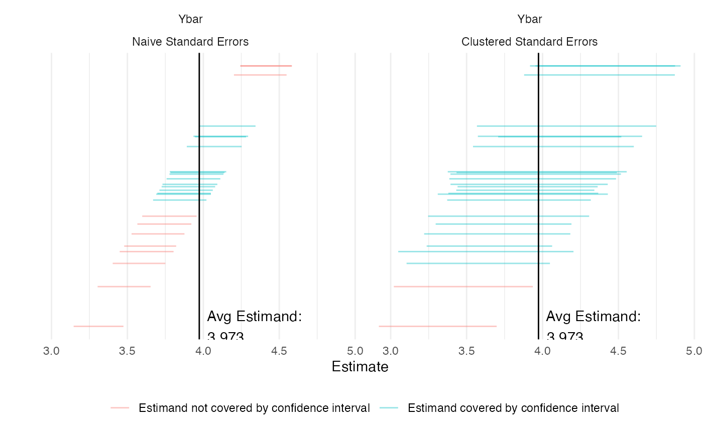

Researchers often cannot randomly sample at the individual level because it may, among other reasons, be too costly or logistically impractical. Instead, they may choose to randomly sample households, political precincts, or any group of individuals in order to draw inferences about the population. This strategy may be cheaper and simpler but may also introduce risks of less precise estimates.
Say we are interested in the average party ideology in the entire state of California. Using cluster sampling, we randomly sample counties within the state, and within each selected county, randomly sample individuals to survey.
Assuming enough variation in the outcome of interest, the random assignment of equal-sized clusters yields unbiased but imprecise estimates. By sampling clusters, we select groups of individuals who may share common attributes. Unlike simple random sampling, we need to take account of this intra-cluster correlation in our estimation of the standard error.1 The higher the degree of within-cluster similarity, the more variance we observe in cluster-level averages and the more imprecise are our estimates.2 We address this by considering cluster-robust standard errors in our answer strategy below.
Design Declaration
-
Model:
We specify the variable of interest \(Y\) (political ideology, say) as a discrete variable ranging from 1 (most liberal) to 7 (most conservative). We do not define a functional model since we are interested in the population mean of \(Y\). The model also includes information about the number of sampled clusters and the number of individuals per cluster.
-
Inquiry:
Our estimand is the population mean of political identification \(Y\). Because we employed random sampling, we can expect the value of the sample mean (\(\widehat{\overline{y}}\)) to approximate the true population parameter (\(\widehat{\overline{Y}}\)).
-
Data strategy:
Sampling follows a two-stage strategy. We first draw a random sample 30 counties in California, and in each county select 20 individuals at random. This guarantees that each county has the same probability of being included in the sample and each resident within a county the same probability of being in the sample. In this design we estimate \(Y\) for n = 600 respondents.
-
Answer strategy:
We estimate the population mean with the sample mean estimator: \(\widehat{\overline{Y}} = \frac{1}{n} \sum_1^n Y_i\), and estimate standard errors under the assumption of independent and heteroskedastic errors as well as cluster-robust standard errors to take into account correlation of errors within clusters. Below we demonstrate the the imprecision of our estimated \(\widehat{\overline{Y}}\) when we cluster standard errors and when we do not in the presence of an intracluster correlation coefficient (ICC) of 0.402.
N_blocks <- 1
N_clusters_in_block <- 1000
N_i_in_cluster <- 50
n_clusters_in_block <- 30
n_i_in_cluster <- 20
icc <- 0.402
fixed_pop <- declare_population(block = add_level(N = N_blocks),
cluster = add_level(N = N_clusters_in_block), subject = add_level(N = N_i_in_cluster,
latent = draw_normal_icc(mean = 0, N = N, clusters = cluster,
ICC = icc), Y = draw_ordered(x = latent, breaks = qnorm(seq(0,
1, length.out = 8)))))()
population <- declare_population(data = fixed_pop)
estimand <- declare_estimand(mean(Y), label = "Ybar")
stage_1_sampling <- declare_sampling(strata = block, clusters = cluster,
n = n_clusters_in_block, sampling_variable = "Cluster_Sampling_Prob")
stage_2_sampling <- declare_sampling(strata = cluster, n = n_i_in_cluster,
sampling_variable = "Within_Cluster_Sampling_Prob")
clustered_ses <- declare_estimator(Y ~ 1, model = lm_robust,
clusters = cluster, estimand = estimand, label = "Clustered Standard Errors")
cluster_sampling_design <- population + estimand + stage_1_sampling +
stage_2_sampling + clustered_sesTakeaways
diagnosis <- diagnose_design(cluster_sampling_design, sims = 25)## Warning: We recommend you choose a higher number of simulations than 25 for the
## top level of simulation.| Estimator Label | RMSE | Power | Coverage | Mean Estimate | SD Estimate | Mean Se | Type S Rate | Mean Estimand |
|---|---|---|---|---|---|---|---|---|
| Clustered Standard Errors | 0.26 | 1.00 | 0.96 | 3.96 | 0.26 | 0.26 | 0.00 | 3.99 |
| (0.05) | (0.00) | (0.04) | (0.05) | (0.05) | (0.00) | (0.00) | (0.00) |
To appreciate the role of clustering better we also plot simulated values of our estimand with standard errors not clustered and with clustered standard errors. To do this we first add an additional estimator to the design that does not take account of clusters.
new_design <- cluster_sampling_design + declare_estimator(Y ~ 1,
model = lm_robust,
estimand = estimand,
label = "Naive Standard Errors")
diagnosis <- diagnose_design(new_design, sims = 25)
The figure above may give us the impression that our estimate with clustered standard errors is less precise, when in fact, it correctly accounts for the uncertainty surrounding our estimates. The blue lines in the graph demonstrate the estimates from simulations which contain our estimand. As our table and graphs show, the share of these simulations over the total number of simulations, also known as coverage, is (correctly) close to 95% in estimations with clustered standard errors and 54% in estimations without clustered standard errors. As expected, the mean estimate itself and the bias is the same in both specifications.
References
Murray, David M. 1998. Design and Analysis of Group-Randomized Trials. Vol. 29. Monographs in Epidemiology & B.
The intra-cluster correlation coefficient (ICC) can be calculated directly and is a feature of this design.↩︎
In ordinary least square (OLS) models, we assume errors are independent (error terms between individual observations are uncorrelated with each other) and homoskedastic (the size of errors is homogeneous across individuals). In reality, this is often not the case with cluster sampling.↩︎